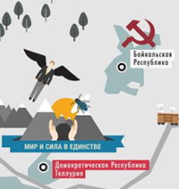

17 января – Провозглашение Демократической Республики Теллурия
Владимир Сорокин за двадцать лет из маргинального писателя-концептуалиста, издевающегося над официальной литературой и обывательской моралью, стал интеллектуальной поп-фигурой. Каждая его книга — событие национального или даже мирового (учитывая номинацию на «Букер») масштаба.
Роман «Теллурия» вышел 15 октября 2013 в издательстве Corpus. Он, как до этого «День опричника» и «Сахарный Кремль», рассказывает нам о будущем, которое у Сорокина привычно предполагает не прогресс, а деградацию. Действие 50 глав (без названий, пронумерованных римскими цифрами) происходит в середине XXI века на территории нынешней Европы и России. Множество мелких государств населяют всевозможные абсурдные существа — странные физически (великаны и кентавры) и ментально (православные коммунисты). Узнаваемое и неузнаваемое мирно соседствуют на ярком гобелене Нового средневековья, похожего на Средние века прошлого тысячелетия наличием объединяющей всех идеи. Только не к царству Божьему на земле обращены теперь взоры ищущих, а к Республике Теллурии, к ее залежам волшебного металла, который приносит счастье. Теллур – главный предмет экспорта этого государства — по эффекту сравним с тяжелыми наркотиками; изготовленные из него клинья, забитые в определенное место головы, вызывают у человека устойчивое эйфорическое состояние и чувство потери времени.
Видовое многообразие и геополитическая раздробленность позволяют писателю играть в любимую игру: конструировать языки. Предугадывать будущее и передавать его суть через речь — две «фирменных» способности Сорокина, и в новом романе обе задействованы в полной мере.